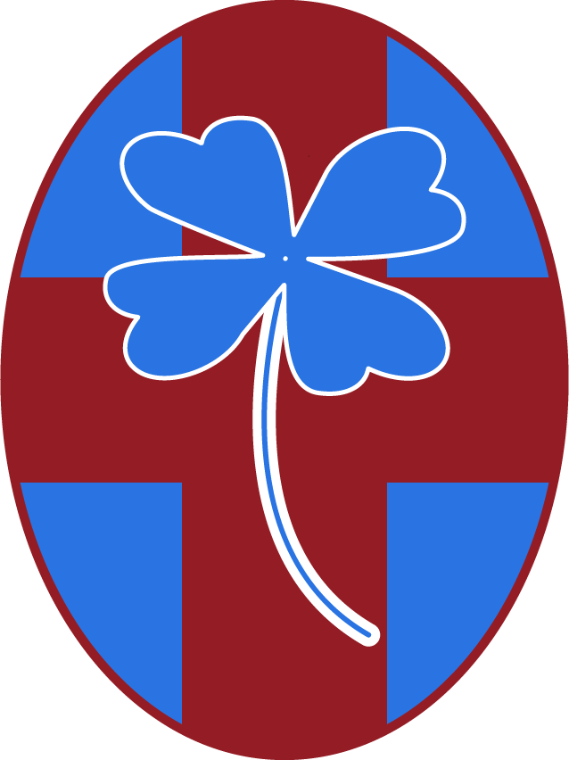
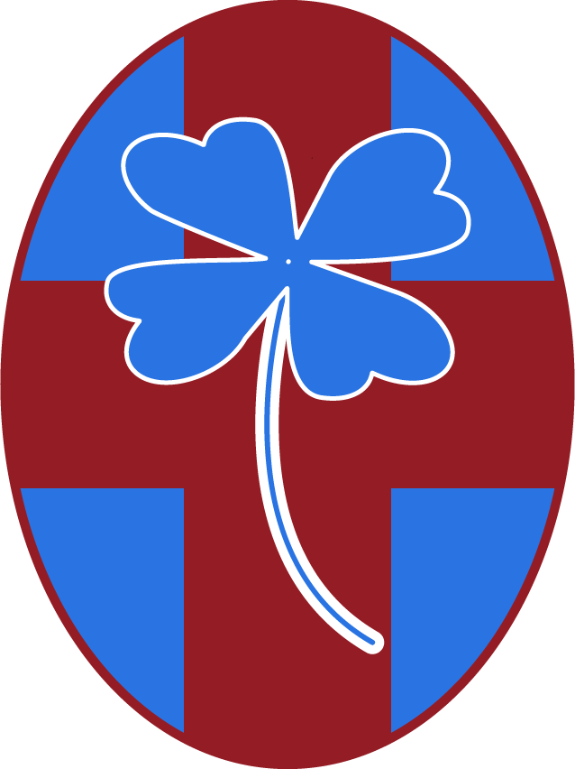

CLASSIFICA E SQUADRE SU
 REGOLAMENTO CAMPIONATO
REGOLAMENTO CAMPIONATO
build REGOLE GENERALI
-
Qualsiasi modifica al regolamento può essere proposta sul gruppo
Whatsapp della competizione.
-
Tutte le decisioni riguardanti la lega devono essere prese tramite votazione, ottenendo la maggioranza dei voti dei partecipanti.
-
Per qualsiasi regola non compresa in questo regolamento, si fa riferimento al regolamento base di fantacalcio della competizione.
-
Quota d'ingresso : 50€.
-
Montepremi :
1° posto: XXX€
2° posto: XXX€
3° posto: 50€
-
Crediti iniziali : 500c.
-
Fasce gol :
0-65,9 = 0sports_soccer
66-71,9 = 1sports_soccer
72-76,9 = 2sports_soccer
77-80,9 = 3sports_soccer
81-84,9 = 4sports_soccer
e si continua con un sports_soccer ogni 4 punti.
-
1 punto per portiere imbattuto.
-
1 punto per assist in movimento.
-
0,5 punti per assist da fermo.
-
Modificatore difesa :
5.9 -> +0
6 - 6.49 -> +1
6.5 - 6.99 -> +3
>= 7 -> +6
-
*VIVAIO: Un giocatore comprato nella stagione precedente a 3c o meno e under 21 (l'età fa fede al giorno in cui si
inizia
l'asta) può essere mantenuto gratuitamente nella nuova squadra. Il giocatore da inserire nel
vivaio e decidere se riconfermare o no l'anno successivo, dev'essere dichiarato entro un mese dalla data dell'asta.
-
5 cambi dalla panchina.
-
Se sono rinviate 4 o più partite, la giornata rimane non
calcolata.
-
*TAGLIONE: In caso di mancato
schieramento della formazione, il sistema recupererà la formazione precedente. Dopo
3 mancati schieramenti, previa votazione, sarà possibile
sostituire il partecipante con un'altra persona sia durante la competizione corrente
che prima dell'inizio della successiva.
-
Non ci saranno sessioni di scambio di giocatori tra le
squadre.
gavel ASTA INIZIALE
-
L'asta iniziale si terrà dopo la chiusura del mercato estivo.
Data: 09/10/20.
-
L'asta per ogni giocatore parte da 1c.
-
Ogni partecipante chiama a turno il giocatore per il quale si
terrà l'asta.
healing ASTA DI RIPARAZIONE
-
Svincolando un giocatore si recuperano tanti crediti quanti ne
vale attualmente il
giocatore.
-
Se un giocatore viene venduto ufficialmente all'estero vale la
regola di sopra.
-
Possono essere svincolati/comprati solo giocatori che ufficialmente sono in serie A.
REGOLAMENTO POZZESINHO CUP
emoji_events REGOLE GENERALI
-
Montepremi : XXX€
-
Calendario giornate: :
Gironi: 5-7-9-11-13-15-17-19-21-23
Quarti: 25-26
Semifinali: 28-29
Finale: 32
history_edu ALBO D'ORO


 
